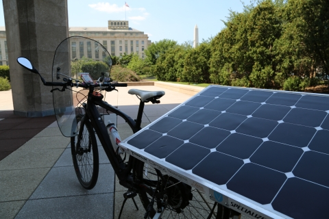
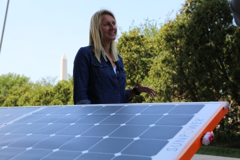
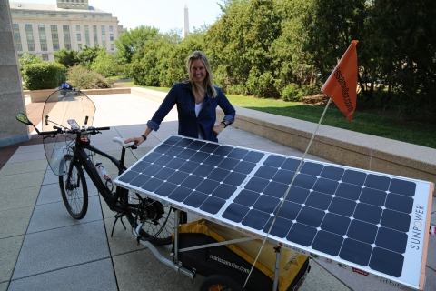
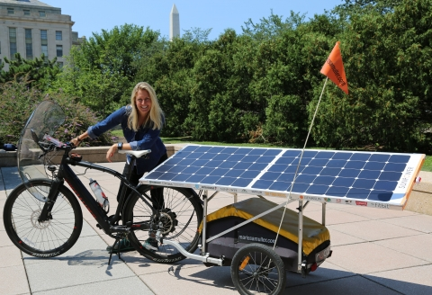
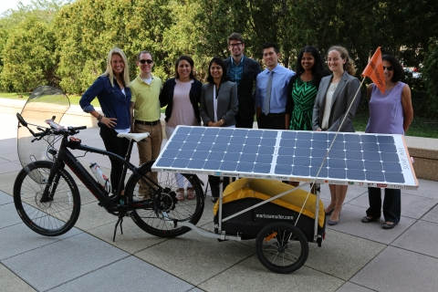
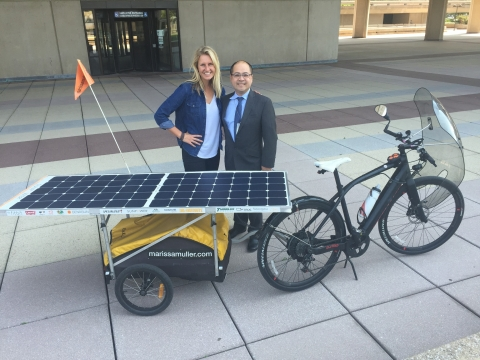

Marissa Muller set out on a mission to ignite a wellness revolution across America. She successfully travel 3,000+ miles on a solar-powered bicycle, visiting many states along the way and holding meetings to engage locals, encouraging them to take action on improving their physical, mental, social, and enviornmental well-being.
With the help of former SunShot awardee SunPower, Marissa and her team successfully re-engineered a Specialized Turbo S e-bike to be charged by the sun. The solar panels attached behind her bike weigh 10 pounds, giving the bike enough energy to constantly hold a charge and assist Marissa's peddling. See the photos below of Marissa making her arrival at the U.S. Department of Energy in Washington, DC on August 14, 2015.





